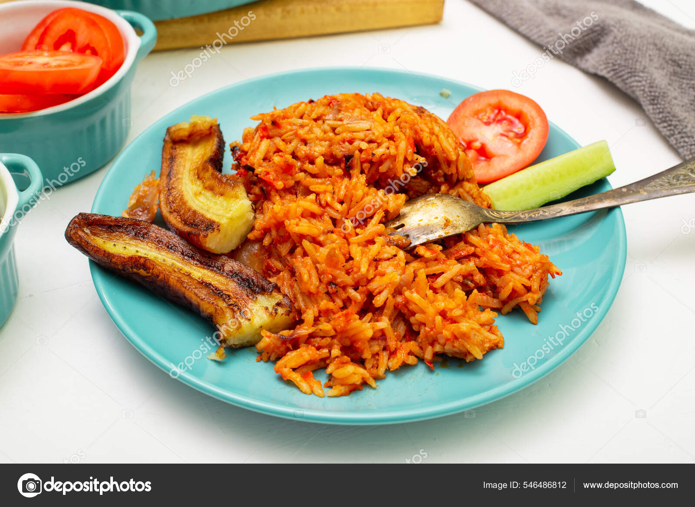

Home
Jellof-Rice
Egusi
Cousecous

Jollof rice is a popular West African dish that is believed to have originated from the Wolof people of Senegal
and Gambia. It is said that the dish was named after the Wolof word "jollof," which means "one pot."
The exact origin of jollof rice is unclear, but it is widely accepted that it is a dish that has been passed down
through generations in West Africa. Jollof rice is a staple dish in many West African countries, including
Nigeria, Ghana, Senegal, and Sierra Leone.
Over time, different variations of jollof rice have emerged in different regions, with each country or region
adding its own twist to the recipe. For example, in Nigeria, jollof rice is often made with a blend of tomatoes,
onions, and scotch bonnet peppers, while in Ghana, it is commonly made with smoked fish or meat.
Jollof rice has become a popular dish around the world, and it is often served at parties, weddings, and other
special occasions. In recent years, there has even been a debate about which country makes the best jollof rice,
with many people fiercely defending their own country's version of the dish.
Ingredients:
- 2 cups of long-grain rice
- 3 large tomatoes
- large onions
- red bell pepper
- 1 green bell pepper
- 2 scotch bonnet peppers
- 3 cloves of garlic
- 1 teaspoon of ginger powder
- 1 teaspoon of dried thyme
- 1 teaspoon of curry powder
- 1 tablespoon of tomato paste
- 3 tablespoons of vegetable oil
- Salt to taste
- 4 cups of water or chicken stock
Instructions:
- the rice thoroughly and drain in a colander.
- Blend the tomatoes, onions, red bell pepper, green bell pepper, scotch bonnet peppers, and garlic in a food
- processor or blender until smooth.
- Heat the vegetable oil in a large pot over medium heat. Add the tomato paste and fry for about 1 minute.
- Add the blended tomato mixture to the pot and stir. Allow it to cook for about 10 minutes or until the mixture
- reduces and thickens.
- Add the ginger powder, thyme, curry powder, and salt to taste. Stir well.
- Add the rice to the pot and stir until it is well coated with the tomato mixture.
- Add the water or chicken stock and stir well.
- Cover the pot and allow the rice to cook on medium heat until the liquid has been absorbed and the rice is cooked
- through, stirring occasionally.
- Once the rice is cooked, remove it from the heat and fluff with a fork.
- Serve hot with your choice of protein, such as grilled chicken or fish.
Enjoy your delicious jollof rice!